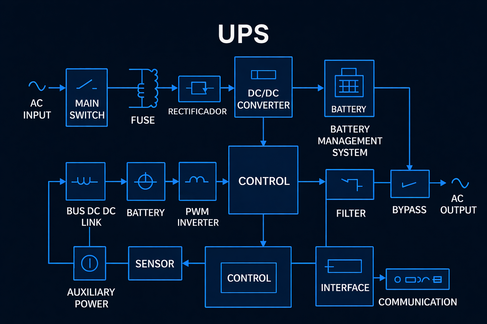
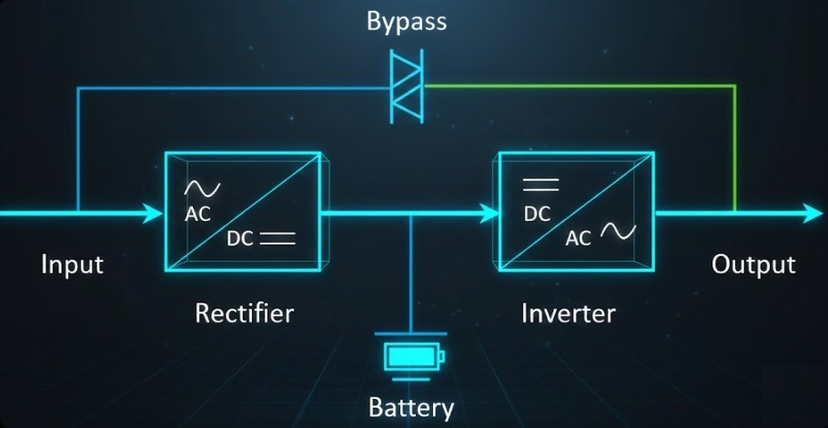
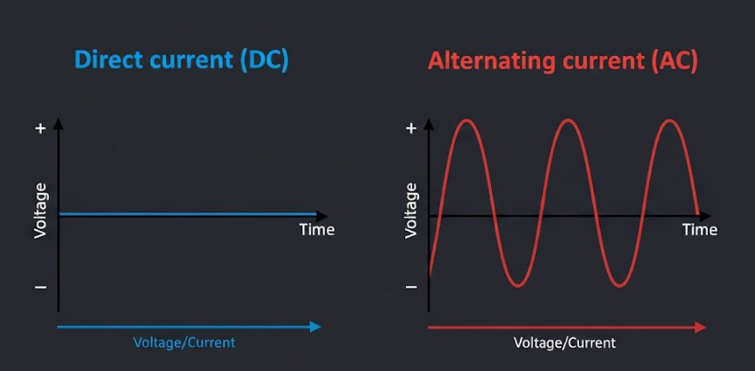
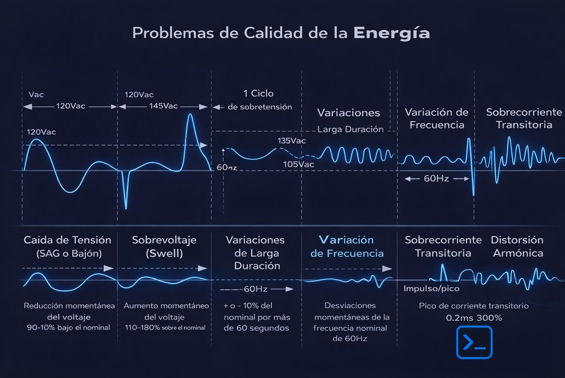
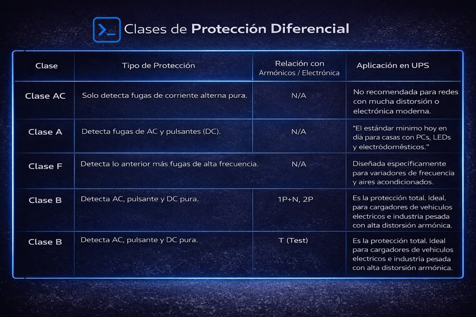
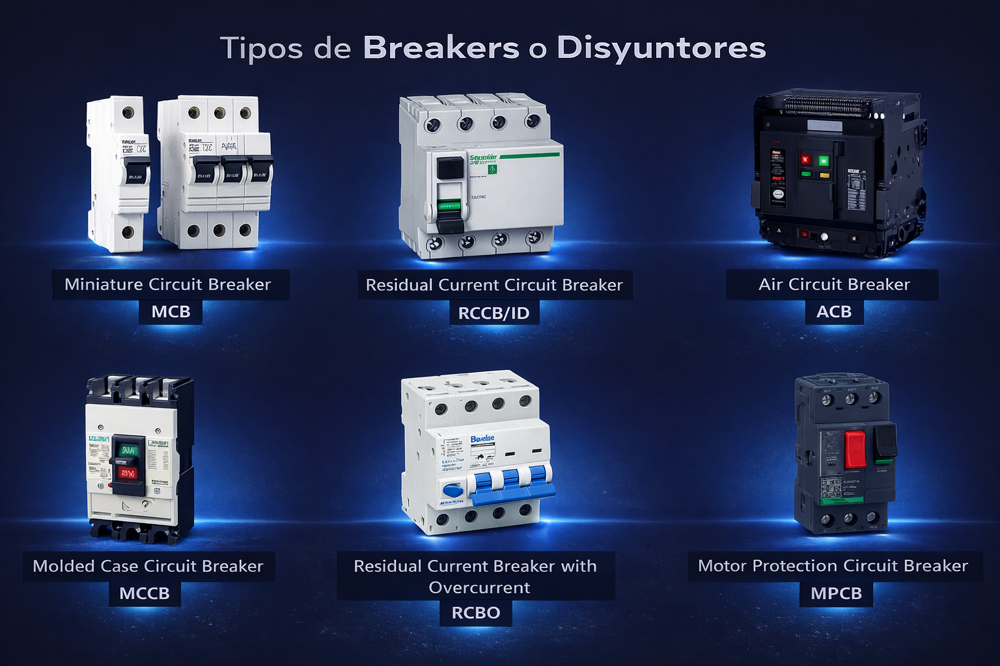
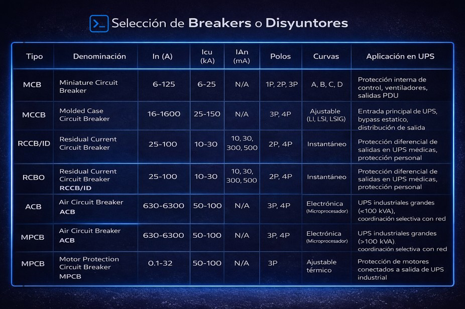
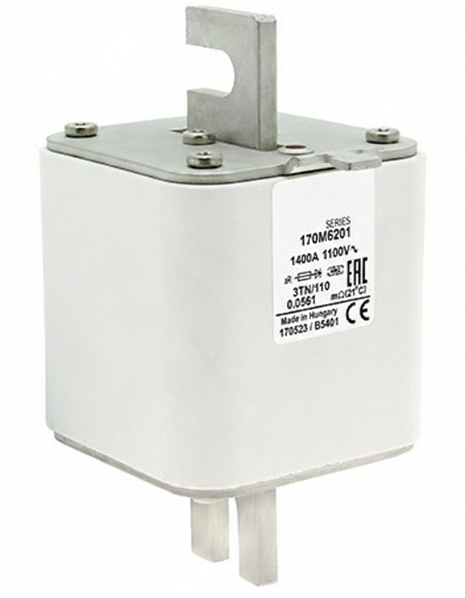
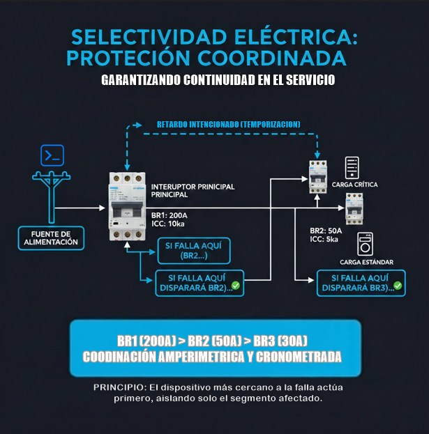
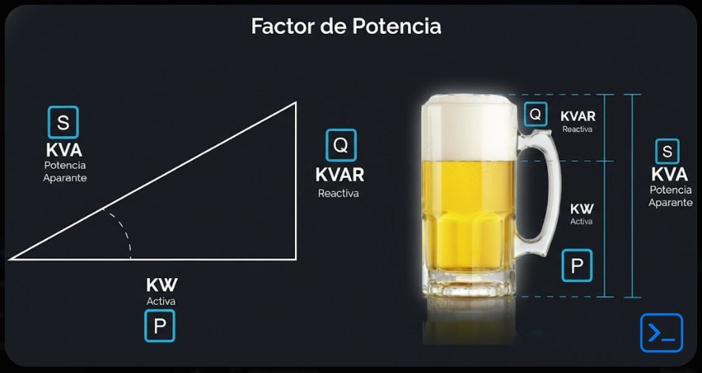

Es importante notar que el diagrama interactivo superior desglosa la arquitectura interna de una UPS a un nivel de componente detallado. Sin embargo, en la industria, el diagrama de bloques estándar para representar una UPS Online de Doble Conversión suele simplificarse para mostrar el flujo de energía principal: Rectificador → Inversor → Carga, con el respaldo de Baterías y Bypass.

Aunque este diagrama simplificado es útil para entender el concepto general, una UPS moderna es una máquina mucho más compleja. El diagrama interactivo que desarrollamos arriba (primera imagen) pretende exponer esa complejidad, permitiendo explorar subsistemas críticos como el PFC (Corrección de Factor de Potencia), la lógica de control DSP y las etapas de sensado que hacen posible la protección de cargas críticas.
La electricidad es fundamental para los sistemas UPS (Uninterruptible Power System), diseñados precisamente para garantizar un suministro continuo de energía. La corriente alterna (AC, Alternating Current), representada por el símbolo eléctrico de una onda sinusoidal (~), es uno de los dos tipos de energía que dominan nuestro mundo. Se usa principalmente porque es más sencilla y económica transmitirla a largas distancias. El otro tipo es la corriente directa (DC, Direct Current).
Dos grandes personajes del siglo pasado defendieron cada sistema: Thomas Alva Edison apostó por la DC, mientras que Nikola Tesla defendió el AC. Ambos visionarios, científicos e inventores mundialmente reconocidos, representaban formas distintas de entender el futuro energético que hoy habitamos. Incluso llegaron a trabajar juntos, dejando marcas indelebles en la historia: Edison, creador de la bombilla incandescente, iluminó literalmente el mundo; Tesla, con su genialidad, nos legó inventos revolucionarios como el motor de inducción.
Película "The Current War"
Nikola Tesla (AC)
Thomas Edison (DC)
La influencia de esta rivalidad trasciende la ingeniería. La compañía de automóviles Tesla rinde homenaje a su legado, y la banda australiana AC/DC tomó su nombre al ver estas siglas en un electrodoméstico. Incluso, esta épica batalla tecnológica llegó al cine en la película "La guerra de las corrientes", que recrea la competencia entre estos gigantes.
Rivalidad: Edison vs Tesla

Diagrama: Diferencias AC/DC
Las caídas de tensión, conocidas técnicamente como SAG (del inglés Sag, que significa hundimiento o depresión) o bajones, son reducciones momentáneas del voltaje entre el 10% y el 90% del valor nominal, con duraciones típicas de medio ciclo a varios segundos. Estos eventos son particularmente peligrosos para fuentes de poder con PFC (Power Factor Correction) activo, ya que cuando el voltaje de entrada desciende por debajo del rango de operación del conversor DC-DC, la fuente intenta compensar extrayendo más corriente para mantener la potencia de salida constante (recordando que P = V × I), sobrecalentando los semiconductores de primario (lo veremos mas a profundidad en etapas siguientes). Las causas principales incluyen el arranque de motores de inducción de gran tamaño (que pueden demandar 5 a 8 veces su corriente nominal durante el inrush, es decir, la corriente de energización o arranque que fluye en el instante de conectar el equipo), la conexión repentina de cargas resistivas como hornos industriales, o fases no lineales a tierra en la red de distribución que crean desequilibrios de tensión. En sistemas informáticos, un SAG profundo provoca que la PSU (Power Supply Unit) entre en modo de hold-up (retención o respaldo), utilizando la energía almacenada en sus capacitores internos para mantener estable la salida durante los milisegundos que dura la falla; si el evento supera el tiempo de retención típico (10-20 ms), el sistema reinicia abruptamente.
El sobrevoltaje o Swell es el fenómeno opuesto al SAG, consistente en un aumento temporal de la tensión entre el 110% y el 180% del nominal, generalmente causado por la desconexión repentina de cargas pesadas en la misma fase o por fallas monofásicas en sistemas trifásicos que redistribuyen el voltaje hacia las fases sanas. Cuando una carga inductiva grande (como un motor o transformador) se desconecta repentinamente, la energía almacenada en el campo magnético del devanado debe disiparse, generando un pico de voltaje que se suma al potencial de la línea. En instalaciones fotovoltaicas, los Swells pueden producirse por el efecto de reflexión de ondas de voltaje cuando la generación supera la demanda local y la energía no puede exportarse rápidamente a la red. Este tipo de evento acelera el envejecimiento de aislamientos eléctricos y puede activar los DPS (Dispositivos de Protección contra Sobretensiones, conocidos en otros países como SPD o supresores) o las protecciones internas OVP (Over Voltage Protection) de las fuentes conmutadas, causando apagados preventivos no deseados para proteger la carga.
Estas perturbaciones se caracterizan por mantener el voltaje fuera de los límites normales (alto o bajo) por períodos superiores a 60 segundos, diferenciándose de los SAG o Swell por su persistencia temporal. Una variación de bajo voltaje prolongada, conocida técnicamente como brownout (apagón parcial o reducción de voltaje), suele ocurrir durante picos de demanda estacionales, cuando la red de distribución no puede mantener la regulación de voltaje ante la caída de impedancia equivalente de los transformadores. Por el contrario, las variaciones de alto voltaje pueden deberse a reguladores de tensión defectuosos en subestaciones o a la desconexión masiva de carga en una zona. A diferencia de los eventos transitorios, estas condiciones generan estrés térmico continuo en equipos: los motores operan con corrientes mayores (para mantener el par constante, es decir, el torque o fuerza de giro necesaria para mover la carga mecánica), los capacitores electrolíticos experimentan mayor corriente de rizado (ripple current, que es la corriente alterna que atraviesa el capacitor superpuesta a la DC, causando calentamiento interno), y las fuentes conmutadas trabajan fuera de su rango óptimo de eficiencia, reduciendo su vida útil porque sus semiconductores (MOSFETs y diodos) operan con mayores pérdidas por conmutación y conducción, acelerando la degradación térmica de los materiales.

Gráfico: Resumen de Problemas de Calidad de Energía
La variación de frecuencia consiste en desviaciones del valor nominal de 50 Hz o 60 Hz del sistema
eléctrico, típicamente en rangos de ±0.5 Hz a ±2 Hz, aunque en condiciones extremas pueden ser mayores.
Esta perturbación es crítica en sistemas donde la velocidad de motores síncronos determina procesos
industriales (como en plantas de papel o textiles), ya que la velocidad rotacional (número de
revoluciones por minuto que gira el eje) es directamente proporcional a la frecuencia según la
fórmula
n = 120f/p
donde:
n es la velocidad en rpm (revoluciones por minuto)
f es la frecuencia
de la red en Hz
y p es el número de polos del motor (que determina su velocidad síncrona base)
Las causas
principales
son desbalances entre generación y carga: si la demanda supera la generación, la frecuencia cae (como
cuando un motor se carga y reduce sus rpm); si sobra generación, la frecuencia sube. En sistemas
conectados a red, estas variaciones son raras debido a la inercia de rotación de los generadores
sincrónicos masivos, pero en instalaciones con generación propia (islas eléctricas) o en países con
redes inestables, pueden dañar equipos sensibles a cristal de cuarzo (relojes, comunicaciones) o causar
resonancias mecánicas en turbinas.
Estos eventos son ráfagas momentáneas de intensidad de corriente que exceden significativamente el valor
nominal del circuito, distintos a los picos de tensión aunque relacionados por la impedancia del sistema
según la ley de Ohm generalizada:
V = I × Z br*2
donde:
V es el voltaje
resultante
I es la corriente que
circula
y Z es la impedancia total del circuito (que incluye la resistencia R más la reactancia
inductiva y capacitiva)
Esta ecuación indica que una corriente elevada multiplicada por la impedancia
de la línea genera una caída de voltaje instantánea, afectando a equipos conectados en el mismo punto
común. Se manifiestan principalmente durante el arranque de equipos con motores (inrush current), donde
la corriente de magnetización del estator (la parte fija del motor donde están enrollados los cables de
cobre que generan el campo magnético) puede alcanzar 600% del valor de plena carga durante los primeros
ciclos, o en la energización de transformadores, donde el flujo remanente en el núcleo puede sumarse al
flujo aplicado causando saturación y corrientes asimétricas de hasta 10 veces el nominal. También se
producen por cortocircuitos parciales o arcos eléctricos. Estos picos de corriente generan caídas de
voltaje instantáneas en la impedancia de la línea (regulación de tensión), afectando a equipos
conectados en el mismo punto común, y pueden disparar breakers térmicos o fusibles de acción rápida de
manera indeseada.
La distorsión armónica es la deformación de la onda senoidal pura de la red eléctrica causada por la presencia de múltiplos enteros de la frecuencia fundamental (3ª, 5ª, 7ª armónica, etc.), típicamente generados por cargas no lineales como rectificadores de onda completa, fuentes conmutadas, variadores de velocidad VFD (del inglés Variable Frequency Drive, conocidos en español como variadores de frecuencia o drives de velocidad variable) y equipos de iluminación LED. Estas cargas consumen corriente en pulsos cortos durante los picos de voltaje de la onda fundamental, en lugar de hacerlo de manera sinusoidal continua. El resultado es una onda con "dientes" o "mellones" que contiene componentes de 150 Hz, 250 Hz, 350 Hz (en sistema de 50 Hz). Los armónicos de orden impar (especialmente el 3º, 9º y 15º) se suman en el conductor neutro, pudiendo llevarlo a sobrecarga térmica aun cuando las fases están balanceadas, ya que en el neutro no se cancelan sino que se suman. Esto provoca calentamiento excesivo en transformadores, vibración en motores (torque pulsante) y errores de medición en equipos de protección que calculan valores RMS verdaderos.
Los interruptores diferenciales (ID o RCCB) no solo se clasifican por su sensibilidad (IΔn de 10mA, 30mA, etc.), sino por su capacidad para detectar diferentes tipos de corriente de fuga, especialmente cuando hay armónicos o componentes de corriente continua involucrados.
Detecta únicamente corrientes de fuga senoidales puras (50/60 Hz). Es el más básico y económico, pero queda ciego ante fugas rectificadas (tipo pulsos de media onda) o corrientes con alto contenido armónico. Solo sirve para cargas resistivas tradicionales; en una UPS moderna o con equipos electrónicos, puede no disparar ante una fuga real peligrosa.
Detecta tanto corriente alterna senoidal como corriente pulsante rectificada (media onda DC). Es el mínimo exigible hoy en día para cualquier instalación con electrónica. En el contexto de UPS, es obligatorio porque los rectificadores de entrada generan pulsos de corriente que un diferencial clase AC no detectaría como fuga peligrosa.
Diseñado para soportar y detectar fugas en presencia de armónicos de alta frecuencia (hasta 1kHz) sin dispararse falsamente por el ruido, pero sí ante fugas reales. Ideal para salidas de UPS que alimentan variadores de velocidad (VFD), fuentes conmutadas o equipos con PFC activo, donde los armónicos de 3ª, 5ª y 7ª armónica son comunes. Tiene filtros que discriminan entre armónicos de funcionamiento normal y una verdadera fuga a tierra.
El más completo: detecta AC, pulsos rectificados, corrientes de fuga con componente DC (corriente continua pura que puede aparecer en fallas de aislamiento en equipos con rectificación) y frecuencias hasta 20kHz. Esencial en instalaciones médicas, cargadores de vehículos eléctricos o UPS de tecnología avanzada donde una fuga podría incluir componente DC que las clases anteriores ignorarían.
Los armónicos generan corrientes que circulan por el conductor de tierra de protección (PE) sin ser fugas peligrosas (son "fugas funcionales" de filtros EMI). Un diferencial clase AC o A podría dispararse intempestivamente (falso positivo) al sumar estos armónicos como si fueran una fuga. Las clases F y B tienen filtros de frecuencia que ignoran estos armónicos de alta frecuencia, disparando solo cuando detectan la fuga real a 50/60Hz o componente DC.

Tabla: Clases de
Diferenciales y Aplicaciones
(No confundir con curvas de breakers)
Los interruptores automáticos o breakers (del inglés circuit breaker) constituyen la primera línea de defensa en cualquier sistema de alimentación ininterrumpida, instalándose tanto en la entrada de red como en la salida hacia la carga crítica para garantizar la seguridad del equipo y del personal. Dentro de una UPS, estos dispositivos cumplen una función dual: protegen el propio sistema UPS contra fallas internas o externas, y aíslan la carga cuando se detectan condiciones anómalas que podrían propagarse desde la red eléctrica. Su principio de operación combina dos mecanismos distintos que actúan en diferentes escalas de tiempo: un elemento térmico que responde a sobrecargas prolongadas generando calor por el efecto Joule (donde la potencia disipada P equivale al cuadrado de la corriente I multiplicada por la resistencia R del conductor, es decir P = I² × R). Y un elemento magnético instantáneo que reacciona a picos de corriente por cortocircuito mediante una bobina de solenoide que genera un campo magnético proporcional a la intensidad.
La selección del breaker según su número de polos es determinante para el tipo de instalación eléctrica y el nivel de aislamiento requerido, especialmente considerando el sistema de puesta a tierra implementado. En el sistema TN-S (Terra-Neutro Separado), estándar en centros de datos, el neutro de protección (PE) y el neutro de trabajo (N) van separados desde el transformador hasta la carga, proporcionando una referencia limpia; mientras que en el sistema TT (Terra-Tierra), común en edificios residenciales, el neutro se conecta a tierra en el transformador de la compañía y las masas se conectan a una puesta a tierra local independiente, lo que obliga al uso de protección diferencial por la alta impedancia de retorno. Los breakers monopolares (1P) cortan únicamente el conductor de fase (línea) y se emplean en circuitos monofásicos de control interno de la UPS, protección de ventiladores auxiliares, o salidas individuales de PDU (Power Distribution Unit) donde no se requiere aislar el neutro. Sin embargo, en instalaciones donde la seguridad exige desconectar completamente el circuito para mantenimiento, o cuando se implementa protección diferencial en sistemas TT, se utilizan breakers bipolares (2P), que accionan simultáneamente sobre la fase y el neutro mediante un mecanismo de acoplamiento mecánico interno; esto es crítico en UPS monofásicas de alta capacidad o en el bypass estático, donde un corte solo de fase podría dejar el neutro conectado a una referencia de tierra elevada por capacitancias parásitas, creando riesgo de choque eléctrico. Para sistemas trifásicos, los breakers tripolares (3P) interrumpen las tres fases (L1, L2, L3) simultáneamente y se instalan como interruptores principales de entrada en UPS trifásicas, garantizando que ante una falla se desconecte completamente el suministro de la red hacia el rectificador. Cuando el sistema trifásico incluye neutro distribuido (TN-S o TT), se emplean breakers tetrapolares (4P), que añaden la apertura del neutro para evitar que corrientes de retorno circulen por trayectorias no deseadas durante operación en modo batería, situación común cuando la UPS conecta su propio neutro flotante o referido a tierra mediante una impedancia de aislamiento.

Tipos de Breakers y Polos
El elemento térmico de un breaker opera basándose en la dilatación diferencial de metales, utilizando una lámina bimetálica compuesta por dos aleaciones (generalmente acero y latón o acero y níquel) unidas sólidamente que poseen coeficientes de expansión térmica distintos. Cuando la corriente circula por el breaker, atraviesa esta lámina o pasa cerca de ella mediante un elemento calefactor en derivación (shunt), generando calor proporcional al cuadrado de la corriente según la ley de Joule. A medida que la temperatura aumenta, el metal con mayor coeficiente de expansión (típicamente el latón) se alarga más que el otro, forzando a la lámina a curvarse hacia el lado del metal de menor expansión. Cuando la sobrecarga persiste más allá del tiempo permitido por la curva de disparo (inversamente proporcional a la magnitud de la sobrecarga: a mayor exceso de corriente, menor tiempo de actuación), la curvatura acumulada empuja un mecanismo de liberación que desengancha los contactos principales, abriendo el circuito de forma irreversible hasta el rearme manual.
La velocidad de respuesta térmica y el umbral del disparo magnético instantáneo se clasifican en curvas de disparo estandarizadas (A, B, C, D), que definen el múltiplo de la corriente nominal (In) al cual actúa el mecanismo magnético y la tolerancia temporal del bimetal. La Curva A es la más sensible, diseñada para protección de circuitos con cargas puramente resistivas y baja impedancia, donde se requiere disparo rápido ante sobrecorrientes mínimas; dispara su elemento magnético entre 2 y 3 veces In, siendo ideal para protección de semiconductores y circuitos electrónicos sensibles donde hasta pequeñas sobrecargas pueden ser dañinas, aunque su uso en UPS es limitado porque dispararía ante los picos normales de arranque de equipos con capacitores de filtrado. La Curva B está diseñada para cargas resistivas con baja corriente de arranque, disparando su mecanismo magnético entre 3 y 5 veces In; se utiliza en protección de iluminación LED y circuitos domésticos, pero en el contexto de UPS se emplea ocasionalmente solo en circuitos auxiliares de control o iluminación de emergencia, nunca en salidas generales porque los servidores y equipos informáticos generan picos de encendido que activarían el disparo intempestivo. La Curva C es el estándar para instalaciones mixtas y el más común en salidas de UPS comerciales e industriales, disparando entre 5 y 10 veces In en el magnético; esto permite tolerar los picos de arranque de fuentes conmutadas, computadoras y pequeños motores sin activarse, pero respondiendo rápidamente ante cortocircuitos reales, soportando por ejemplo 80 A en un breaker de 16 A durante aproximadamente 0.1 segundos antes del disparo magnético, o 23 A durante cerca de una hora antes del disparo térmico. La Curva D está específicamente diseñada para cargas con alta corriente de arranque (inrush), disparando entre 10 y 20 veces In; es obligatoria en UPS que alimentan transformadores, motores de inducción, compresores de aire acondicionado o grandes fuentes conmutadas, donde la corriente de magnetización inicial puede alcanzar 8 a 15 veces la nominal durante los primeros ciclos, tolerando hasta 640 A en un breaker de 32 A durante 10 milisegundos sin disparar, permitiendo que el motor arranque mientras protege contra cortocircuitos de valor superior. En los MCCB (Molded Case Circuit Breaker) de media y alta capacidad dentro de la arquitectura UPS, estos umbrales son ajustables mediante diales calibrados que varían la distancia entre la lámina bimetálica y el punto de disparo, permitiendo configurar el tiempo de retardo para tolerar picos específicos de arranque de motores conectados a la salida sin disparos intempestivos. En el siguiente video se comprende mucho mejor:
En las UPS de mediana y gran capacidad (típicamente desde 10 kVA hasta varios MVA), los breakers de caja moldeada o MCCB se instalan como interruptores principales de entrada (breaker de aislamiento de red) y como protección de salida hacia los tableros de distribución. Estos dispositivos se caracterizan por su carcasa fabricada en termoplástico moldeado de alta resistencia dieléctrica que encapsula los mecanismos de arco y los contactos principales, soportando corrientes nominales (In) que van desde los 16 A hasta los 1600 A según el modelo. Su capacidad de ruptura (Icu o corriente última de ruptura) alcanza valores entre 25 kA y 150 kA, garantizando que puedan interrumpir fallas de cortocircuito severas en la entrada de la UPS sin destruirse ni propagar el arco eléctrico hacia el interior del gabinete. Además, muchos MCCB incluyen accesorios de disparo por bobina de mínima tensión (UV, Under Voltage) que desconectan automáticamente la UPS si la red cae por debajo de un umbral crítico, protegiendo la batería de descargas profundas accidentales.
La selección de breakers en una UPS debe respetar la coordinación selectiva, es decir, que el breaker de
la UPS tenga una capacidad de ruptura superior a la corriente de cortocircuito máxima calculada en el
punto de conexión a la red (Icc), y que sus curvas de disparo sean temporizadas para actuar antes que
los breakers aguas arriba (de la red pública) pero después que los protectores aguas abajo (de la
carga), creando una cascada de protección donde solo se aísla la sección fallada. Los breakers de
protección amplia (high breaking capacity) en la entrada de la UPS deben soportar no solo la corriente
nominal de operación continua, sino también los picos de corriente de cortocircuito que la red pueda
entregar, calculados mediante la impedancia de cortocircuito del transformador de distribución cercano
según la fórmula
Z = V / (√3 × Icc)
donde Z es la impedancia de la fuente en ohmios
V el voltaje línea
a línea en voltios
Icc la corriente de cortocircuito trifásica disponible en amperios
Si
un breaker
de entrada de UPS tiene capacidad de ruptura insuficiente, ante un cortocircuito grave podría explotar o
soldar sus contactos, propagando la falla hacia el interior del equipo y comprometiendo la integridad
física del sistema de baterías.

Tabla Comparativa de Breakers en Sistemas UPS
Si te fijas en los costados o frontales de los disyuntores, como vimos en el primer video de esta seccion, hay varias convenciones, a continuacion puedes ver que significa cada uno:
In (Corriente Nominal):
Es la corriente máxima que el
breaker puede conducir
indefinidamente a temperatura ambiente sin dispararse por sobrecarga térmica. Por ejemplo, un breaker de
In = 32 A puede operar 24/7 a 32 A, pero si la corriente sube a 40 A (1.25 veces In), el bimetal
calentará y disparará en aproximadamente 1 hora según su curva característica.
Icu (Corriente Última de Ruptura):
También denominada
Icn en
normas IEC, representa la
máxima corriente de cortocircuito que el breaker puede interrumpir sin destruirse ni propagar el arco.
Si la corriente de falla en el punto de instalación es 20 kA, el breaker debe tener Icu ≥ 20 kA. En la
entrada de una UPS conectada a una subestación cercana, es común encontrar Icu de 65 kA o 100 kA.
Ics (Corriente de Servicio de Ruptura):
Es el
porcentaje de
Icu que el breaker puede
interrumpir y seguir operando normalmente después (típicamente 50%, 75% o 100% de Icu). Un breaker con
Icu = 50 kA e Ics = 100% puede abrir 50 kA y seguir usándose; si solo tiene Ics = 50%, después de abrir
25 kA debería reemplazarse por precaución.
IΔn (Corriente de Fuga Nominal):
Exclusivo de breakers
diferenciales (RCCB/ID), indica
la corriente de desbalance fase-neutro que provoca el disparo instantáneo. Valores típicos: 10 mA
(protección personal directa en hospitales), 30 mA (protección general en húmedo), 100-300 mA
(protección contra incendios en seco).
Botón T (Test/Trip):
Presente únicamente en breakers
diferenciales (RCCB e RCBO), es un
pulsador que simula una fuga de corriente interna para verificar que el mecanismo de disparo magnético
funcione correctamente. Debe pulsarse mensualmente para garantizar que la bobina diferencial no esté
bloqueada por suciedad o corrosión. No confundir con el botón de rearme tras disparo.
Ue (Tensión Nominal de Empleo):
Máximo voltaje que el
breaker puede soportar
permanentemente sin riesgo de arco entre polos. Para UPS monofásicas: Ue = 230/240 VAC; para trifásicas:
Ue = 400/415 VAC o 690 VAC en industriales.
Impedancia de Cortocircuito (Z):
Determina la Icu
requerida
según Z = V / (√3 × Icc),
donde V es el voltaje línea-línea, e Icc la corriente de cortocircuito trifásica disponible. Una UPS
ubicada cerca del transformador de la subestación tendrá Z baja e Icc alta, exigiendo breakers con Icu ≥
65 kA.
El fusible constituye el elemento de protección más primitivo pero crítico dentro de la arquitectura de entrada de una UPS. A diferencia de los breakers, que son dispositivos de conmutación reutilizables, el fusible es un elemento sacrificial de acción irreversible diseñado para "morir" de forma controlada y salvaguardar la integridad física del equipo y la instalación. Es un dispositivo pasivo que interrumpe el flujo de energía mediante la fusión controlada de un elemento conductor cuando la corriente supera valores letales para el cableado o los semiconductores de la etapa de entrada, actuando como respaldo térmico de último recurso cuando la velocidad de respuesta requerida es incompatible con la inercia mecánica de un breaker. No debe usarse como interruptor de maniobra para encender o apagar la UPS, ni detecta fugas a tierra ni regula tensión; su lógica es puramente térmica, discriminando solo entre magnitudes de energía, no entre tipos de falla.
El fusible opera exclusivamente mediante el efecto Joule, donde la energía disipada como calor sigue la relación P = I² × R, siendo P la potencia térmica generada, I la corriente instantánea y R la resistencia del elemento fusible (generalmente aleación de plata, cobre o zinc con punto de fusión preciso). Cuando la corriente excede el umbral nominal, el calor eleva la temperatura hasta el punto de fusión, abriendo el circuito mediante vaporización controlada del conductor. Este proceso sigue una curva tiempo-corriente característica que define su comportamiento: los fusibles Time Delay (retardados) toleran breves sobrecorrientes como el inrush de magnetización de transformadores durante varios segundos sin dispararse, mientras que los Fast Acting (rápidos) actúan en milisegundos ante cualquier exceso, sacrificando la tolerancia a picos por velocidad de protección. La energía térmica acumulada (I²t) determina el momento exacto de fusión: debe superar el límite admisible para que el elemento se rompa, lo que explica por qué un pico breve no funde el fusible pero un valor sostenido sí.
In (Corriente Nominal): Es el valor de corriente continua que el fusible puede conducir indefinidamente sin deteriorarse térmicamente; en UPS se selecciona considerando la corriente RMS máxima de entrada incluyendo picos durante carga de baterías, con margen del 25% para compensar temperatura ambiente dentro del gabinete.
I²t (Energía de Fusión): Representa la energía térmica necesaria para fundir el elemento (pre-arcing) y extinguir el arco eléctrico (total clearing), siendo determinante para la coordinación con semiconductores: debe ser inferior al I²t de destrucción de los diodos o IGBTs de la etapa posterior para garantizar que el fusible muera antes de que los transistores se perforen térmicamente.
Capacidad de Ruptura (Icn o Breaking Capacity): Es la corriente máxima de cortocircuito que puede interrumpir sin explotar; debe superar la Icc calculada en el punto de instalación según la impedancia de la red aguas arriba, pues un fusible con Icn insuficiente ante un cortocircuito cercano al transformador puede fragmentarse violentamente.

Fusibles
Los fusibles se clasifican según la norma IEC 60269 mediante códigos alfanuméricos que indican su función y velocidad:
gG (general purpose, uso general) o gL (línea): Son retardados térmicamente, diseñados para protección de cables y equipos generales, soportando picos de arranque sin disparos intempestivos; se emplean en UPS monofásicas de pequeña potencia donde la protección de semiconductores no es crítica.
aR (semiconductores): De la norma antigua ahora gR o aR según velocidad, son ultrarrápidos, diseñados específicamente para proteger rectificadores y puentes de diodos con tiempo de actuación en microsegundos y bajo I²t, siendo obligatorios en UPS industriales trifásicas donde los semiconductores tienen baja tolerancia térmica.
gBat (baterías): Específicos para protección de bancos de baterías donde se requiere coordinación con la corriente de cortocircuito del acumulador.
gPV (fotovoltaico): Diseñados para soportar corrientes inversas y arcos en sistemas solares.
gR (cables y semiconductores): De uso general para semiconductores pero con características intermedias.
aM (motores): Ultrarrápidos para protección de circuitos de maniobra de motores donde la corriente de arranque es muy alta pero la protección debe ser rápida ante cortocircuitos.
La letra inicial indica la velocidad: g (general, retardo permitido) o a (ultrarrápido), mientras que la segunda letra indica la aplicación específica.
El fusible debe coordinarse jerárquicamente con el breaker de entrada mediante selectividad amperimétrica y cronológica. La filosofía de diseño determina si actúa como protección de respaldo: el breaker debería disparar primero ante sobrecargas moderadas, mientras el fusible solo interviene ante fallas catastróficas de cortocircuito que exceden la velocidad del breaker. Alternativamente, en diseños de alta integridad donde el I²t del breaker es demasiado alto para proteger semiconductores, el fusible puede ser el primario. Un error crítico frecuente es sobredimensionar el fusible "para que no se funda", lo que anula la protección y puede provocar incendios, o sustituir fusibles aR por gG en UPS industriales, exponiendo los rectificadores a destrucción térmica antes de que el fusible actúe.

Curvas de Selectividad: Breaker vs Fusible
Cuando miras el diagrama de bloques de una UPS, el rectificador aparece justo después de la protección de entrada y antes de ese "depósito" de energía que llamamos DC Link. Su función esencial es transformar la corriente alterna de la red en corriente continua, pero hacerlo bien implica dominar unos cuantos conceptos de potencia eléctrica que suelen confundirse.
Antes de hablar de rectificadores, necesitamos visualizar cómo se comporta la energía en un sistema de corriente alterna. Imagina un triángulo rectángulo donde cada lado representa una forma diferente de potencia.

Triángulo de Potencias
En la base horizontal tenemos la Potencia Activa (P): medida en vatios (W). Es la útil, la que realmente realiza el trabajo: mueve motores, calienta resistencias, ilumina focos. Es la energía que tu empresa eléctrica te cobra como consumida.
En el cateto vertical tenemos la Potencia Reactiva (Q): medida en voltiamperios reactivos (VAR). Esta no produce trabajo útil, pero es necesaria para crear los campos magnéticos en transformadores y motores. Es como la "espuma" de un vaso de cerveza: ocupa espacio en el sistema (requiere cables más gruesos), pero no es lo que realmente bebes.
La hipotenusa, que cierra el triángulo, es la Potencia Aparente (S): medida en voltiamperios (VA). Representa lo que "ve" la red eléctrica: la combinación vectorial de la activa y la reactiva. Es por lo que la empresa eléctrica debe dimensionar sus transformadores y cables, y es la base para calcular si te aplican penalizaciones en la factura.
Durante años se usaron como sinónimos, pero en las instalaciones modernas con rectificadores (cargas no lineales), son cosas distintas.
El coseno de phi (cos φ) es simplemente el ángulo entre la potencia activa y la aparente, pero solo considera el desfase temporal entre la tensión y la corriente fundamental (la onda básica de 50 o 60 Hz). Es válido para motores y cargas lineales tradicionales. Es decir que en él se tiene en cuenta la distorsión armónica.
El Factor de Potencia (FP o λ) es más completo: es la relación entre la potencia activa y la potencia aparente total, pero incluye una tercera dimensión que el coseno de phi ignora: los armónicos. Cuando un rectificador moderno corta la onda senoidal para convertirla en continua, genera "suciedad" eléctrica (corrientes a múltiplos de la frecuencia fundamental). Esto crea una potencia reactiva de distorsión (D) que es perpendicular al plano tradicional del triángulo de potencias. No se tiene en cuenta la distorsión armónica.
La diferencia práctica: Puedes tener un rectificador donde la corriente y la tensión estén perfectamente en fase (cos φ ≈ 1.0), lo que técnicamente parece perfecto. Sin embargo, si esa corriente está terriblemente distorsionada por los armónicos (como pasa en un rectificador básico de diodos), el Factor de Potencia real puede caer a 0.7 o 0.8. Es decir, el coseno de phi te dice que todo está bien, mientras el Factor de Potencia real revela que estás siendo un "mal vecino" para la red y posiblemente pagando penalizaciones.
Es fácil caer en la trampa de pensar que una UPS con alta eficiencia tiene buen factor de potencia, pero miden cosas diferentes. La eficiencia te dice qué porcentaje de la energía que entra sale como energía útil (el resto se pierde como calor). Un rectificador puede ser muy eficiente (96%) pero tener un factor de potencia pobre (0.6) porque está distorsionando la red. Sería como un atleta que corre muy rápido pero deja botellas tiradas por el camino: cumple su objetivo, pero contamina el entorno.
No todos los rectificadores se comportan igual ante la red. Según el UPS Handbook de Kohler y las referencias clásicas de Ross y Beaty, podemos dividirlos por cómo afrontan ese problema del factor de potencia y los armónicos.
Imagina puente de diodos que simplemente "recortan" la mitad negativa de la onda alterna. Es robusto, barato y casi indestructible. El problema es que consume corriente a "trompicones": solo absorbe energía en los picos de la onda senoidal. Esto genera un factor de potencia terrible (alrededor de 0.6) y una distorsión armónica (THD) que puede superar el 80%. Es como beber con una pajita muy fina: das sorbos grandes e intermitentes en lugar de un flujo constante. Se usa en UPS pequeñas de tipo off-line donde el costo es prioridad absoluta y la calidad de red no es crítica.
Aquí es donde entra la tecnología moderna. En lugar de diodos simples, utiliza transistores de potencia como IGBTs (Transistores Bipolares de Puerta Aislada) controlados por microprocesadores mediante una técnica llamada PWM (Modulación por Ancho de Pulso).
La explicación sobre PFC comienza en 8:19. Nota: Si los subtítulos aparecen en inglés, actívalos en: ⚙️ Configuración > Subtítulos > Traducir automáticamente > Español.
En esta parte el PWM activa el MOSFET o IGBT abriéndolo y cerrando a determinada frecuencia. Los semiconductores que controlan esta etapa de switcheo o apertura y cierre, se usan principalmente mosfets e IGBTs.
Funcionamiento IGBT
Explicación PWM
Funcionamiento Conjunto
Internamente, este sistema emplea un circuito Boost (convertidor elevador). Piensa en él como una bomba inteligente que, en lugar de dejar pasar el agua directamente, la "empuja" en ráfagas muy rápidas (miles de veces por segundo) para mantener una presión perfectamente constante en un depósito superior (el DC Link que se verá más adelante), incluso cuando la presión de entrada fluctúa. Pero lo más importante es que modula esas ráfagas para que la corriente que extrae de la red sea una onda senoidal perfecta, sincronizada con la tensión.
El resultado es un factor de potencia cercano a la unidad (0.99) y una distorsión armónica total (THD) inferior al 5%. Es el estándar en centros de datos y equipos industriales críticos porque, aunque es más complejo, cumple con todas las normativas actuales y evita penalizaciones en la factura eléctrica.
En UPS industriales de gran potencia (varios cientos de kVA), nos encontramos con otra clasificación técnica. Un rectificador de 6 pulsos utiliza seis tiristores o diodos para rectificar la corriente trifásica. Es el estándar tradicional, pero genera un THD de entrada alrededor del 30%, lo cual puede ser problemático para la red vecina si no se filtra adecuadamente.
El rectificador de 12 pulsos utiliza dos juegos de rectificadores de 6 pulsos con un defasaje de 30 grados entre ellos, logrado mediante un transformador especial de desplazamiento de fase. Como explica la guía técnica de ABB, esto hace que ciertos armónicos (como el 5º y el 7º) se cancelen entre sí en el primario del transformador, reduciendo el THD de entrada de ~30% a ~10%. La desventaja es que requiere un transformador específico más grande y costoso, aumentando el espacio y el peso de la instalación.
Cuando tenemos un rectificador de 6 pulsos conectado a una red trifásica, este genera una "huella dactilar" de armónicos muy específica. Básicamente, inyecta a la red corrientes "sucias" en los órdenes 5, 7, 11, 13, 17, 19... (siguiendo la fórmula 6k ± 1, donde k es cualquier entero). Estos son los armónicos no deseados que distorsionan la onda senoidal pura de 50 o 60 Hz.
Ahora, el truco del rectificador de 12 pulsos es utilizar dos rectificadores de 6 pulsos simultáneamente, pero alimentar el segundo con un transformador especial que retrasa su tensión (y por tanto su corriente) exactamente 30 grados eléctricos respecto al primero.
Aquí viene la física elegante: cuando sumas las corrientes de ambos rectificadores en el primario del transformador, algo curioso sucede con los armónicos. Los de orden 5 y 7 (que son los más problemáticos y de mayor magnitud en un sistema de 6 pulsos) llegan al primario en oposición de fase.
Es decir, el armónico de 5º orden generado por el primer rectificador llega "hacia arriba" mientras que el del segundo, debido a esos 30 grados de desplazamiento multiplicados por 5 (150 grados totales de diferencia), llega exactamente "hacia abajo". Se cancelan mutuamente. Lo mismo ocurre con el 7º orden (30° × 7 = 210°, que es lo mismo que -150°, oposición total).
El resultado práctico es que desaparecen los armónicos 5, 7, 17, 19... del espectro de entrada a la red. Solo sobreviven los armónicos de orden 11, 13, 23, 25... (los de orden 12k ± 1), que son de menor magnitud y más fáciles de filtrar. Es por esto que el THD baja drásticamente del 30% alrededor del 10%.
El transformador de desplazamiento de fase es la pieza clave: tiene dos secundarios (o un secundario con toma intermedia) donde uno está conectado en estrella (wye) y otro en triángulo (delta), o variaciones de esto, logrando naturalmente ese defasaje de 30 grados entre ambos sistemas sin necesidad de electrónica compleja, solo mediante la topología magnética del cobre y el hierro.